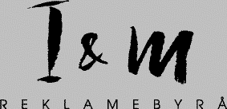

I&M Reklamebyrå AS ble etablert i 1972. Byrået omsetter for vel 21 millioner kroner eksl. media, og har 13 ansatte. Gjennom byråets tre datterselskaper kan I&M tilby følgende tjenester:
Informasjon og samfunnskontakt; I&M Ramstad. Sollid AS, Molde e-post: irs@oslonett.no
Grafisk rådgivning og formidling; Imprint AS, Ålesund
I&M Reklamebyrå AS er medlem av Reklamebyråforeningen, reg. nr. RRA 139 samt internasjonalt samarbeid gjennom Amada Europa.
Byråets eiere er Arne Hanssen, Kari Drevik og Kirsti Furseth.
I&M Reklamebyrå AS er et fullservicebyrå innen markedskommunikasjon og reklame. Byrået har prioritert kunnskap om sisteleddsmarkedsføring, kreativitet og forbrukerkommunikasjon. Byråets IT-strategi er et naturlig verktøy i denne prosessen.
I&M Reklamebyrå AS har kunder innen følgende bransjer:
Av kunder kan nevnes:
Byrået er også medeier i Moldenett AS gjennom I&M Ramstad. Sollid AS, som i dag produserer dokumenter for publisering over Internet.
Vil du vite mer om denne tjenesten kan du nå oss på e-post: irs@oslonett.no eller
telefon 70 12 61 11.
Telefon 70 12 61 11
Telefax 70 12 67 17
Daglig leder: Arne Hanssen, telefon privat 70 25 16 25
Økonomiansvarlig: Knut Arve Sæter, telefon privat 70 14 65 63
Media/sekretær: Kari Drevik, telefon privat 70 13 71 06
IT-ansvarlig: Ove Ramstad, e-post: irs@oslonett.no
Kundekontakt:
Eldar Nevstad
Knut Arve Sæter
Arne Hanssen